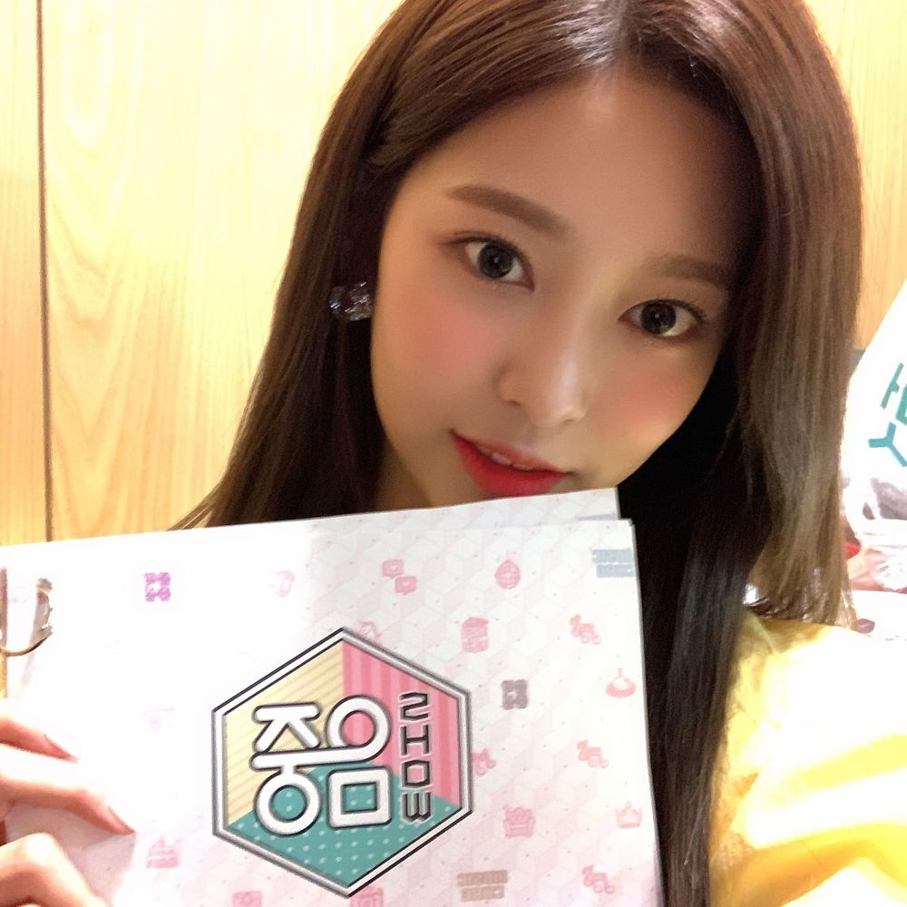

오늘 노지 봤어요?!ㅋㅋ
나도 퇴근길에 바로 봤어요!
벌써 두 달이 다 되어가다니🤭
처음 MC 됐다고 들었을 때, 다 같이 연습하던 중이었거든요
듣고 나서 다 같이 박수 쳐주고 응원해 주는데 진짜 감동받았어요
나는 진짜 행복한 사람이구나'하고
기쁜 일도, 슬픈 일도 함께해 줄 동료 그리고 이호이 있다는 건 정말 큰 힘인 것 같아요
처음엔 내가? 할 수 있을까?라는 생각도 많이 들고,
사람들이 실망하지 않을까? 라는 생각들도 사실 했었던 것 같아요..!
그런 생각을 떨치려고 더 열심히 연습하기도 했는데
생방 때 되니까 진짜 엄청 떨리더라구요ㅎㅎ
혼자 스케줄 하는 것도 익숙하지 않은데
멤버들 없이 음악방송에 오게 되다니..
게다가 저 한명을 위해서 여러 명의 스텝분들이 움직이는 것도, 생방송이라는 것도.
긴장이 너무 많이 되더라구요ㅎㅎ하핫 저 좀 어이없죠..🙂
그래도 이호이랑 멤버들 생각하면서 정신 똑바로 차리고 잘 마무리하고 왔어요!!💕
빠르게 정리하고 퇴근하느라 노지에는 다 담지 못했지만 멤버들 모두 고생했다 잘했다 응원해 줬어요!!
막 캡쳐해서 보내준 멤버들도 있구💪사랑둥이들
암튼 이렇게 MC까지 해보다니..!이호 정말 감사합니다:)
앞으로도..! 기대하 쇼 쇼 쇼🤚
저녁 안 먹었으면 얼른 챙겨드슈 슈..슈..? 미안